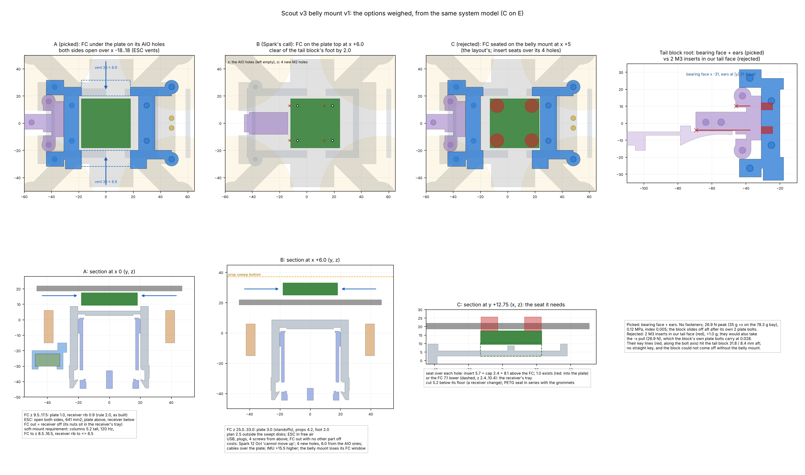

Scout v3 belly mount, concept v1 (round 2)
One PETG print, 25.0 g (E): two yokes clamped between the Bee35 plate (z 18.5) and the receiver's mount plane (z 9.6), joined only through the flow sensor's bipod. Nothing of it stands beside the FC over x −18..18, so the ESC has 641 mm² of side vents. It takes the receiver's 4 M3 bolts in inserts and bolts to the plate with 4 new M3. The tail block's tongue bears on its tail face at x −31.


Checks
- solid_check
- PASS, 1 body
- system_check
- PASS
- fit
- 0.0 mm³, contacts 0.000
- access
- 25 / 25 clear
- CG in / out
- 0.2 / 2.2 (gate 3.0)
- flow view
- clear to the ground
- ESC vents
- 641 mm², both sides
- FC / plate
- 1.0 (rule 2.0, as built)
- FC / receiver rib
- 0.9 (rule 2.0, as built)
- flow clear air
- slipstream test (E); column test: no pose passes
Loads and modes (E)
- crash 35 g × 14
- worst 0.23 (frame), limit 1.0
- receiver inserts
- 0.081 (600 N)
- plate inserts
- 0.143, prying up to 3.3×
- carbon bearing
- 0.014
- flight / landing
- ≤ 0.03, limit 0.5
- FC as-built grommets
- 543..858 Hz, in blade pass
- soft-mount requirement
- 120 Hz, columns 5.2 tall
- flow bipod
- 405 Hz
- breaking order
- 0.23 ≤ 0.59 / 1.5
Attachments
- Receiver: 4 M3 up into M3 × 5.7 inserts at (−37.65, ±26.55), (48.28, ±26.55).
- Plate: 4 new Ø3.4 holes, M3 down into inserts at (−25, ±13), (30, ±13). The Bee35's own side and nose holes stay empty.
- FC: on the plate's own 25.5 AIO holes, M2 × 12 + grommets (E). The yokes stay clear of it.
- Tail block: tongue on the x −31 face, ears bearing on its bosses at |y| 21.
- Flow: a bipod from pads at x ∓24, with a tie bar over the cradle at (0, −40), z −30..−22.
FC placement (Spark decides A or B)
A, picked: under the plate on its AIO holes, as built, vented both sides. The FC comes out only with the receiver off. The soft-mount requirement clears both FC gaps: 5.2 columns, FC at z 8.5..16.5, receiver rib cut 2.1.
B: on the plate top at x +6. Clear on every side, ESC in free air, FC out with nothing else off. Against it: Spark's 12 Oct "cannot move up", 4 new holes, the IMU 15.5 higher.
C, rejected: a seat on the belly mount at x +5. It needs 8.1 of height above the FC where 1.0 exists.
Tail block root
Picked: a bearing face at x −31 plus ears. No fasteners; peak 26.9 N at 0.12 MPa.
Rejected: 2 M3 inserts in the tail face. Their key lines hit the tail block 31.8 and 8.4 mm aft, and they would lock the block to the belly mount.